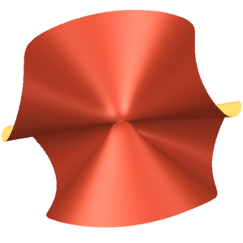

5.2. Using 6 points in $\P^2$
The second technique is specific to cubic surfaces. We first reduce to the case of 6 points in $\P^2$, and then use the geometry of 1-parameter families of automorphisms of $\P^2$. This method can show, for example, that the cubic with the $A_5$ singularity does not lie in the closure of the orbit of a generic cubic. (This particular surface had been immune to all our previous strategies.)
Let $W \subset \P^2$ be an admissible length 6 subscheme and let $X = X_W$ be the cubic surface associated to $W$. Let $S \subset \P^2$ be a smooth cubic surface, and suppose $X$ lies in the $\PGL_4$-orbit closure of $S$. Then $W$ lies in the $\PGL_3$ orbit closure of a length 6 scheme $Z \subset \P^2$ such that $\Bl_Z \P^2$ is isomorphic to $S$.
Since $W$ is in the orbit closure of $S$, there exists a $\k$-algebra DVR $R$ with fraction field $K$ and residue field $k$ with a family of cubic surfaces $\pi \colon \mathcal X \to \spec R$ whose central fiber $\mathcal X_0$ is isomorphic to $X$ and whose general fiber $\mathcal X_K$ is isomorphic to $S_K = S \times_k K$. We know that $X$ has only ADE singularities (Proposition 2.10 [63B3]) and hence we can resolve the singularities of $X$ in the family. That is, there exists a smooth and projective $\pi' \colon \mathcal X' \to \spec R$ and $\beta \colon \mathcal X' \to \mathcal X$ such that $\beta_K$ is an isomorphism and $\beta_0$ is the minimal resolution of singularities; see [8] or [29].
Set $X' = \mathcal X'_0$. We know from the proof of Proposition 2.13 [96E0] that $X'$ is also the minimal desingularization of $\Bl_Z\P^2$. Let $X' \to \P^2$ be the composite $X' \to \Bl_Z \P^2 \to \P^2$, and let $L'$ be pullback of $\O(1)$ to $\mathcal X'_0$. It is easy to see that $h^i(X', L') = 0$ for $i > 0$ and $h^0(X', L') = 3$. Since $H^2(X', \O_{X'}) = 0$, there are no obstructions to deforming $L'$—it extends to compatible family of line bundles on $\mathcal X' \times_R \spec R/t^n$ for every $n$, where $t \in R$ is the uniformizer. By Artin's approximation theorem [6] applied to the relative Picard functor of $\pi'$, we deduce that $L'$ extends to a line bundle $\mathcal L$ on $\mathcal X'$, after possibly replacing $R$ by a finite étale cover. By cohomology and base change, we see that $\pi'_* \mathcal L$ is a free $R$-module of rank 3. It is also easy to see that the evaluation map $\pi'^*\pi'_* \mathcal L \to \mathcal L$ is surjective. After choosing an isomorphism $\pi'_* \mathcal L \cong R^3$, we get a map $\alpha \colon \mathcal X' \to \P^2_R$, which restricts to the original map $X' \to \P^2$ on the central fiber.
Recall that $\mathcal X'_K = \mathcal X_K = S \times_k K$. Since $H^1(S, \O_S) = 0$, it follows that the line bundle $\mathcal L$ on $S \times_k K$ is constant, that is, isomorphic to $L \otimes_k K$ for some line bundle $L$ on $S$. The complete linear system $|L|$ gives a map $a \colon S \to \P^2$. It is easy to check that the map $\alpha \colon \mathcal X'_K \to \P^2_K$ and $a_K \colon \mathcal X'_K \to \P^2_K$ are equal, up to an automorphism of $\P^2_K$.
The natural map $\alpha^* \omega_{\P^2_R/R} \to \omega_{\mathcal X'/R}$ gives a map $\omega^{-1}_{\mathcal X'/R} \to \alpha^* \omega^{-1}_{\P^2_R/R}$ and hence an evaluation map $$\pi'_* \left(\omega_{\mathcal X'/R}\right) \otimes_R \O_{\P^2_R} \to \omega_{\P^2_R/R}^{-1}.$$ Tensor by $\omega_{\P^2_R/R}$ to get $$\pi'_* \left(\omega_{\mathcal X'/R}\right) \otimes_R \omega_{\P^2_R/R} \to \O_{\P^2_R}.$$ Then the cokernel is $\O_{\mathcal Z}$ for a closed subscheme $\mathcal Z \subset \P^2_R$. Note that both the general and the special fiber of $\mathcal Z \to \spec R$ have length 6, and hence $\mathcal Z \to \spec R$ is flat. The central fiber is the subscheme $W \subset \P^2$ and, up to an automorphism of $\P^2_K$, the general fiber is $Z \times_k K \subset \P^2_K$, where $Z \subset \P^2$ is such that $S \cong \Bl_Z \P^2$. The proof is now complete.
The anatomy of linear rational maps $\P_t^2 \dashrightarrow \P_t^2$
To study orbit closures of collections of points in $\P^2$, we must understand one parameter families of automorphisms of $\P^2$.
Let $R$ be a $\k$-algebra DVR with residue field $\k$, fraction field $K$, and uniformizer $t$. For an $R$-module $M$, we set $M_K = M \otimes_R K$ and $M_0 = M \otimes_R \k$. Let $\phi \colon \P^2_K \to \P^2_K$ be an isomorphism. We analyze the corresponding rational map $\P^2_R \dashrightarrow \P^2_R$. The analysis should hold for $\P^n$ for any $n$; we stick to $n = 2$ to keep us focused.
Let $M$ and $N$ be free $R$-modules of rank 3, and suppose $\phi \colon M_K \to N_K$ is a $K$-linear isomorphism. By scaling $\phi$ by the correct power of the uniformizer, assume that $\phi$ induces a map $\phi \colon M \to N$ such that $\phi_0 \colon M_0 \to N_0$ is non-zero. By the rank of $\phi$, we mean the rank of $\phi_0$.
By making a change of basis on $M$ and $N$, we may assume that $\phi$ is given by a diagonal matrix $$\phi \equiv \begin{pmatrix} 1 & & \\ & t^a & \\ & & t^b \end{pmatrix},$$ where $0 \leq a \leq b$ are integers.
If $a = b = 0$, then there is nothing to analyze.
Suppose $a = 0$ and $b > 0$, or equivalently, $\rk \phi_0 = 2$. In this case, the rational map $\phi$ is defined away from the point $[0:0:1]$ in $\P M_0$. It sends the point $[a:b:c]$ to the point $[a:b:0]$, which lies on the line $Z = 0$. Said in a coordinate free manner, the rational map $\phi$ is defined away from a particular point $p \in \P M_0$. For $q \in \P M_0 \setminus \{0\}$, the image $\phi(q)$ lies on a particular line $L \subset \P N_0$, and the map $$\phi \colon \P M_0 \setminus \{p\} \to L$$ is the linear projection from $p$ followed by an isomorphism.
Suppose $a > 0$, or equivalently $\rk \phi_0 = 1$. In this case, the rational map $\phi$ is defined away from the line $X = 0$ in $\P M_0$. It sends the point $[a:b:c]$ to the point $[1:0:0]$. Said in a coordinate free manner, the rational map $\phi$ is defined away from a particular line $L \subset \P M_0$ and the map $$\phi \colon \P M_0 \setminus L \to \P N_0$$ is constant.
Using the matrix of $\phi$, we can explicitly construct a resolution of the rational map $\phi \colon \P^2_R \dashrightarrow \P^2_R$ using a sequence of elementary transformations. We get the description of the maps (5.2) and (5.3) also from this resolution. Let $L \subset \P^2$ be the locus of indeterminacy of $\phi$ (with the reduced scheme structure). Let $\widetilde P \to \P^2_R$ be the blow up of $L$. Then the central fiber of $\widetilde P$ is the union of $\Bl_L\P^2$ and the exceptional divisor $E$. If $\phi$ has rank 1, then $L$ is a line, and these two components are $\P^2$ and the Hirzebruch surface $\F_1$, respectively, meeting along $L \subset \P^2$ and the unique $(-1)$ curve on $\F_1$. If $\phi$ has rank 2, then $L$ is a point, and these two components are $\F_1$ and $\P^2$, respectively, meeting along the $(-1)$-curve on $\F_1$ and a line in $\P^2$. In both cases, the first component can be contracted: to a point in the rank 1 case and to a line in the rank 2 case. The resulting threefold is again isomorphic to $\P^2_R$. The rational map $\P^2_R \dashrightarrow \P^2_R$ after this operation corresponds to the diagonal matrix with entries $(1,t^{a-1}, t^{b-1})$ in the rank 1 case and $(1, 1, t^{b-1})$ in the rank 2 case. Observe that the new locus of indeterminacy is disjoint from the image of the contracted component. We repeat the procedure until we reach the identity matrix. Alternatively, we can do all the blow-ups first, and then all the contractions. We then get a diagram
The central fiber of $\widehat P$ has an accordion like structure $P_0 \cup \dots \cup P_n$ (see Figure 7), where each $P_i$ is a copy of $\F_1$ for $i = 1, \dots, n-1$, meeting the previous surface along the $(-1)$-curve and the next one along a $(+1)$-curve. The first surface $P_0$ is $\F_1$ if $a = 0$ (that is, $\phi$ has rank 2) or $\P^2$ if $a > 0$ (that is, $\phi$ has rank 1). Likewise, the last surface $P_n$ is $\F_1$ if $a = b$ or $\P^2$ if $b > a$.
Orbit closure of 6 general points in $\P^2$
We use the analysis in Section 5.2.1 to understand limits of a general set of six points in $\P^2$ under a one-parameter family of automorphisms. Let $Z \subset \P^2$ be a configuration of 6 distinct points, with no three collinear. A point $p \in \P^2 \setminus Z$ is a star point if, for some ordering $\{z_1, \dots, z_6\}$ of $Z$, the lines $\langle z_1, z_2 \rangle$ and $\langle z_3, z_4 \rangle$ and $\langle z_5, z_6 \rangle$ are concurrent at $p$. A star-free configuration is one without any star points.
Let $Z \subset \P^2$ be a set of 6 points forming a star-free configuration. Suppose $W \subset \P^2$ is in the $\PGL_3$ orbit closure of $Z$. Then there exists a line in $\P^2$ containing at least 4 distinct points of $W$ or there exists a point in $\P^2$ at which $W$ has multiplicity at least 4.
There exists a $\k$-algebra DVR $R$ with fraction field $K$ and $\phi \in \Aut(\P^2_K)$ such that $W$ is the flat limit of $\phi(Z_K)$. Consider the rational map $$\phi \colon \P^2_R \dashrightarrow \P^2_R.$$ We use $\phi$ to understand $W$ as a cycle. For $z \in Z$, let $z_K$ denote the constant section $z \times_k K$ of $\P^2_K$, and let $\phi(z)_0$ be the flat limit of $\phi(z_K)$. Then the cycle $[W]$ of $W$ is simply $$[W] = \sum_{z \in Z} \phi(z)_0.$$
Suppose $\phi$ has rank 2. Then the indeterminacy locus of $\phi$ consists of a single point $p$ in the central fiber, and the map $\phi_0 \colon \P^2 \dashrightarrow \P^2$ is the linear projection with center $p$ onto a line $L \subset \P^2$ (see (5.2)). If $p \not \in Z$, then $\phi_0$ is defined for every $z \in Z$, and $\phi(z)_0$ is simply $\phi_0(z)$. Since $Z$ is star-free, the linear projection from $p$ can identify at most 2 pairs of points from $Z$. As a result, the set $\{\phi_0(z) \mid z \in Z\}$ consists of at least 4 distinct points on $L$. If $p \in Z$, consider $Z' = Z \setminus \{p\}$. Then $\phi_0$ is defined on $Z'$, and $\phi(z)_0$ is simply $\phi_0(z)$ for $z \in Z'$. Since no 3 points of $Z$ are collinear, the linear projection from $p$ maps the points of $Z'$ to distinct points. As a result, the set $\{\phi_0(z) \mid z \in Z\}$ actually consists of 5 distinct points on $L$.
Suppose $\phi$ has rank 1. Then the indeterminacy locus of $\phi_0$ is a line $L \subset \P^2$ and $\phi_0$ is constant on $\P^2 \setminus L$. Let $Z' = Z \setminus L$. Since no three points of $Z$ are collinear, $L$ contains at most 2 points of $Z$, and hence $Z'$ contains at least 4 points. By construction, $\phi_0$ is defined on $Z'$, and hence $\phi(z)_0 = \phi_0(z)$ for $z \in Z'$. Since $\phi_0$ is constant, we conclude that $W$ contains a point of multiplicity at least 4.
Let $W \subset \P^2$ be a curvilinear scheme of length 6 whose cycle is $p + q + 4r$, where $p,q,r$ are distinct and $T_rW$ does not contain $p$ or $q$. Then $W$ does not lie in the $\PGL_3$ orbit closure of a star-free configuration $Z$.
We prove the contrapositive. Let $\phi \in \Aut(\P^2_K)$ be an automorphism such that $W$ is the flat limit of $\phi(Z_K)$. We show that $T_r W$ contains $p$ or $q$. The key idea is to consider flat limits of lines in $\P^2$ under the action of $\phi$. To do so, we use the same analysis as before but for the map between dual projective spaces $$\phi^\vee \colon (\P^2)_R^\vee \dashrightarrow (\P^2)_R^\vee.$$ If $A$ is the $3 \times 3$ matrix defining $\phi$, then the matrix defining $\phi^\vee$ is $(A^T)^{-1}$.
If $\phi_0^\vee$ is defined for a line $\ell \in (\P^2)^\vee$, then the flat limit of the family of lines $\phi(\ell_K) \subset \P^2_K$ is the line corresponding to $\phi_0^\vee(\ell)$. The statements (5.2) and (5.3) for the dual projective space say the following. If $\phi^\vee$ has rank 1, then the indeterminacy locus of $\phi^\vee_0$ consists of a particular $\Lambda \in (\P^2)^\vee$. For $\ell \neq \Lambda$, the map $\phi_0^\vee$ is the composite of $\ell \mapsto \ell \cap \Lambda$ and a linear inclusion $\Lambda \to (\P^2)^\vee$. In this case, a fiber of $\phi_0^\vee$ consists of a collection of concurrent lines, with the point of concurrency on $\Lambda$. If $\phi^\vee$ has rank 1, then the indeterminacy locus of $\phi^\vee_0$ consists of lines through a particular point $p \in \P^2$. For $\ell \in (\P^2)^\vee$ not containing $p$, the map $\phi_0^\vee$ is constant.
Consider a line $\ell$ joining pairs of points of $Z$. By semi-continuity, the flat limit of $\phi(\ell_K)$ must intersect $W$ in a scheme of length at least 2. There are at most four lines in $\P^2$ that intersect $W$ in a scheme of length at least 2: the lines $\overline{pq}$, $\overline{pr}$, $\overline{qr}$, and $T_rW$. In particular, if $\phi_0^\vee$ is defined at $\ell$, then $\phi_0^\vee(\ell)$ must be one of these 4. This immediately implies that $\phi^\vee$ cannot have rank 1. To see this, suppose it has rank 1. Consider the ${6 \choose 2} = 15$ lines joining pairs of points of $Z$. If $\phi_0^\vee$ takes only 4 values on these lines (or may be undefined on one of them), we would be able to partition them into 4 collections of concurrent lines, such that the points of concurrency are collinear. But it is easy to check that this is impossible for a star-free configuration $Z$.
We have now concluded that $\phi^\vee$ has rank 2, and hence $\phi_0^\vee$ is constant on its domain. Suppose the constant value of $\phi_0^\vee$ corresponds to the line $L \subset \P^2$. Suppose $z_1 \in Z$ (resp. $z_2 \in Z$) is such that the flat limit of $\phi({z_1}_K)$ is $p$ (resp. $q$). Consider the 8 lines $\overline {z_i z}$ for $i= 1,2$ and $z \in Z \setminus \{z_1,z_2\}$. Since these lines are not all concurrent, $\phi_0^\vee$ is defined for at least one of them, say $\ell = \overline {z_1 z}$. Then $\phi^\vee_0(\ell)$ corresponds to the line $L$. Since $\ell$ contains $z_1$, the flat limit $L$ of $\phi(\ell_K)$ contains the flat limit $p$ of $\phi({z_1}_K)$.
Now consider the ${4 \choose 2} = 6$ lines joining pairs of points of $Z \setminus \{z_1,z_2\}$. Since the 6 lines are not all concurrent, $\phi_0^\vee$ is defined on at least one of them, say $\ell$. Then the flat limit of $\phi(\ell_K)$ is also $L$. Since the flat limit of a point of $Z \setminus \{z_1,z_2\}$ is $r$, by semi-continuity, we have $$\mult_r(L \cap W) \geq 2.$$ In other words, $L = T_rW$. But then $T_rW$ contains $p$.
Applications
Let $X \subset \P^{3}$ denote the cubic surface defined in homogeneous coordinates $\left(x_{0}, x_{1}, x_{2}, x_{3}\right)$ by the equation $$x_{3}f_{2} - f_{3} = 0,$$ where $f_{2} = x_{0}x_{1}$ and $f_{3} = x_{0}^3 + x_{1}^{3}-x_{1}x_{2}^{2}$. This is the unique cubic surface possessing a single $A_5$ singularity, up to projective equivalence. For the reader's amusement, we include a real picture of $X$ in Figure 8.

The surface $X$ is the cubic surface associated to the length 6 subscheme $W \subset \P^2$ defined by $f_2 = 0$ and $f_3 = 0$. The scheme $W$ has the cycle $p + q + 4r$, where $p$, $q$, $r$ are distinct but collinear, and the tangent line $T_rW$ is distinct from the line $\overline{pqr}$. The identity component of the automorphism group of $X$ is $\G_a$.
Let $S$ be a smooth cubic surface without an Eckardt point. Then $X$ is not in the $\PGL_4$ orbit closure of $S$.
We know that $S$ is isomorphic to $\Bl_Z \P^2$, where $Z \subset \P^2$ is a star-free configuration. The result now follows from Proposition 5.4 [87F4] and Proposition 5.6 [9D0D].
Comments
No comments yet.
Leave a comment
Comments are reviewed before appearing. Your comment will be emailed to the author for approval.
The same conclusion holds for a curvilinear $W$ with cycle structure $2p + 4r$ such that $T_rW$ does not contain $p$. The same proof works with $p = q$.